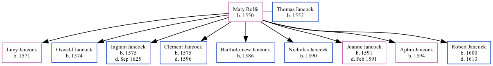

Mary Jancock (née Rolfe) 1550 -
[ Home ] | [ Calendar ] | [ Surnames Index ] | [ Family History ]Mary Rolfe, the 11 times great-grandmother of Nigel Horne, was born in Elham, Kent, England in 1550 and married Thomas Jancock (with whom she had 9 children: Lucy, Oswald, Ingram, Clement, Bartholomew, Nicholas, Joanne, Aphra and Robert) on Nov 17, 1589.
Children
- Lucy was born in 1571
- Oswald was born in 1574
- Ingram was born in 1575
- Clement was born in 1575
- Bartholomew was born in 1586
- Nicholas was born in 1590
- Joanne was born in 1591
- Aphra was born in 1594
- Robert was born in 1600
Family Tree
Generated by Ged2Site. Last updated on Jul 20, 2025